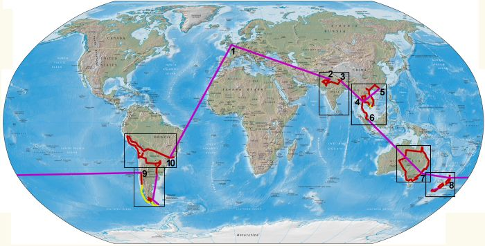

World Map Page
The Route

From London [1], we start our trip by flying to Delhi [2]. We then make our way into Nepal and
to Katmandu [3], where we fly to Bangkok [4] for one night, and then onto Hong Kong [5].
Then we make our way back to Bangkok, via Vietnam and Cambodia, and then on through Thailand and Malaysia to
Singapore [6]. A flight out to Sydney [7] should then bring us into the new year.
A couple of months with Anna and a campervan should let us see the East coast, and then onto New Zealand [8] for another month. Then it's out to South America, starting in Santiago [9], Chile, and then round Argentina, back into Chile, then Peru, Bolivia and Brazil, bringing us to Rio de Janeiro [10] and on a plane back home sometime in the summer of 2003!
A couple of months with Anna and a campervan should let us see the East coast, and then onto New Zealand [8] for another month. Then it's out to South America, starting in Santiago [9], Chile, and then round Argentina, back into Chile, then Peru, Bolivia and Brazil, bringing us to Rio de Janeiro [10] and on a plane back home sometime in the summer of 2003!